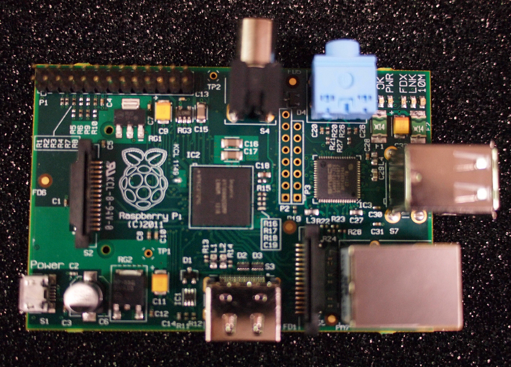
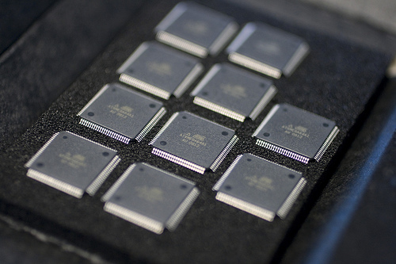
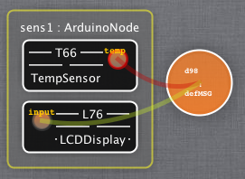
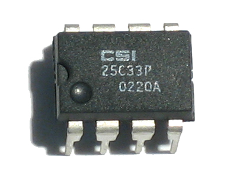

Communication semantics between component in channel
Heterogeneity management with NodeType
Java Node, Dalvik Node, Arduino Node
Cloud Node (Jails/*BSD, JCloud, mini-cloud, EC2)
Kevoree concepts
ComponentType
Encapsulate domain features
ChannelType
Encapsulate communication semantics
GroupType
Encapsulate model@runtime dissemination semantics
NodeType
Encapsulate adaptation semantics
Design your code
@ComponentType
@Provides({
@ProvidedPort(name = "on"),
@ProvidedPort(name = "off"),
})
public class DigitalLight
extends AbstractArduinoComponent {
//hard code goes here ...
}
Code your design
@ComponentType
@Provides({
@ProvidedPort(name = "on"),
@ProvidedPort(name = "off"),
@ProvidedPort(name = "toggle"),
@ProvidedPort(name = "flash")
})
public class DigitalLight
extends AbstractArduinoComponent {
//hard code goes here ...
}
>Kevoree in the small
Devices diversity
New mobility usages boost low consumption computer development
FPGA (VHDL)
Micro-controller (uC, C code)
System on chip (SoC)
(Raspberry project, Java, Python, Javascript)

Smartphones (android, Java)
Low consumption Cloud VM based on ARM
CPS challenges
Buzz words: IoT and CPS
In a nutshell mix them all to build pervasive systems
Not new: Cyber physical systems (CPS) are identified as key research by NSF since 2006
8Highly dynamic domain, new chip, tools, languages
every year
2But introducing heterogeneity complexity
Short time to market
2Many interconnection protocols
CPS use case : SmartBuilding
SmartBuilding case study
Temperature sensors (each floor, office...)
$$$
Alarm and notification points (screen, sound, etc.)
sss
Autonomous decision and monitoring points
44
Global decision nodes (legacy)
Ä
Of course, users with smartphones, tablets
LL
μControllers are candidates for CPS!

AVR derived processors are still the most sold nowadays
μControllers are ready for mass production and cheap
Pro: Low consumption, reliable, predictable
Cons: Very constrained, complicated soft development
CPS devices need tradeoff between, consumption, computational power, cost, development cost.
Push cleverness directly in μC is more reliable, especially for reflex rules,
data filtering, smoothing ...
Challenges of adaptation on μC
μC nodes can't manage every adaptation capability!
Dynamic adaptation on μC faces several challenges
Downtime must be minimal
Volatile memory usage must fit in few kB
Persistent memory writes are limited
Reconfiguration must be statefull, to recover from power failure
use more powerful sibling to pre-compile adaptations
μKev Component model
Type definition/instance (what/where)
Component with ports (in/out) and parameters
Communication channels between ports (bindings)
Write code (C/Processing/Java)
Instantiate in a model
@ComponentType
@DictionaryType({
@DictionaryAttribute(name = "pin")
})
@Requires({
@RequiredPort(name = "temp")
})
public class TempSensor
extends AbstractPeriodicArduinoComponent {
//behavior code
}

Generate firmware for types + KevScript for instances
Behind the scene
Asynchronous message passing
FIFO on each ports (Actor semantics)
No OS == no multi-threading
Opportunistic scheduler driven by
FIFO pending message number
Periodic execution subscriptions
0
Transactional KevScript interpreter
Generated flat reflexive layer for dynamic instantiations
Token ring dynamic memory allocation
Experimental protocol
Take 5 models from SmartBuilding case study
From 0 to 10 components instances
Randomly switch from a model to another periodically
Tested hardware => ATMEGA328 and ATMEGA2560
Persistent memory (embedded EEPROM vs external SDCARD)

Communication through serial port at 9600 b/s
Experiment raw result
mean = 234ms
Adaptation speed distribution?
Buffer effect
smooth higher values
reduce mean and min
Less compression time
Over 1Kb gain become not significant
Human perception ~200ms
>Kevoree in the large
A model abstract nodes configurations
Each node host a model@runtime engine
ÑÑÑ
(D)M@R need concurrency management
Ubiquitous environment each node can modify global
M@R layer
Mesh network Sporadic nodes, intermittent
connections
Â
Node1 is isloted !
Model Snapshot of a node state
Each node host it's own copy, consistency are not mandatory
Concurrent modification are inevitable, due to connexion lost.
Model divergency ?
Similarly to P2P database, like loosing ACID property
Like in Ultra Large Scale Systems, inevitable
Like in P2P, strong resilience to fault
But : need like in DHT efficient way to converge DDAS global model
Defining a gossiper protocol for (D)M@R
VectorClock to track branch & concurrency
Gossiper to deal with hostile mesh network
Use M@R as a network topology layer
Enrich node selection with network faults
Every input stored in the M@R (payload) itself to keep all dynamic without initial
configuration
Inverted communication, send payload only if necessary
Combine VectorClock (VC) + Gossiper + M@R layer
Gossiper Cluster Experiment
A quantitative and qualitative experimental evaluation has been done on Gossiper+VectorClock group
implementation.
Experimental setup of 66 computational nodes
Connected through a local area network at 100MB/s
Topology model is randomly generated
Global time axis logger for metrics measurement
Influence of the communication strategy on M@R propagation delay ?
Does the algorithm handle reconciliation ?
ooÖ×Ö
>Kevoree for Cloud
Managing cloud level with Kevoree node
Kevoree node is a container, of components but also of nodes !
A parent node has responsibility for child's nodes life cycle (start/stop)
NodeType refine adaptation strategy
Thing Cloud as a hierarchy
IaaSNode -> PaaSNode -> SaaSNode
IaaS and PaaS nodes
Just add Add/Remove node capacility
Available NodeTYpe
MiniCloud : (Add/Remove Java Virtual Machine)
FreeBSD Jails: (Add/Remove VM in the same kernel space)
SmartOS Zone: (same as Jail)
KVM: Hypervisor management
Amazon EC2: Add/Remove EC2 Virtual Machine
KevScript as a cloud modeling language
KevoreeScript only manipulate model !
IaaS adaptation
//add IaaSPlatform
addNode iaasKVM21 : KVMNode {ip="10.0.1.5"}
//add two user node
addNode userNode1 : JavaSENode
addNode userNode2 : UbuntuNode {version="12.04"}
//attach to IaaSNode42
addChild userNode1,userNode2@iaasKVM21
Kevoree == Abstraction model for distributed adaptive systems Ü
Model@Runtime ease the manipulation of systems P
Homogenous adaptation for heterogenous CPS devices
Large scale adaptation with Gossip or Paxos
Ready for cloud development and elasticity algorithm development k
Open source U
>Thank you
References
Fouquet, Francois and Daubert, Erwan and Plouzeau, Noel and Barais, Olivier and Bourcier, Johann and
Jezequel, Jean-Marc -- Dissemination of reconfiguration policies on mesh networks
F. Fouquet, O. Barais, N. Plouzeau, J-M. Jézéquel, B. Morin and F. Fleurey. -- A Dynamic Component Model for
Cyber Physical Systems. -- In CBSE: 15th International ACM SIGSOFT Symposium on Component Based Software
Engineering. Bertinoro, Italy, June 2012.
E. Daubert, F. Fouquet, O. Barais, G. Nain, G. Sunyé, J-M. Jézéquel, J-L. Pazat and B. Morin. -- A
models@runtime framework for designing and managing Service-Based Applications. -- In ICSE Workshop on
European Sofware Services and Systems Research - Research and Challenges (S-Cube). Zurich, Switzerland, May
2012.
Nain, Grégory , Fouquet, François , Morin, Brice , Barais, Olivier and
Jézéquel, Jean-Marc (2010) Integrating IoT and IoS with a Component-Based approach. In Procedings of
the 36th EUROMICRO Conference on Software Engineering and Advanced Applications (SEAA 2010). Lille,
France.
André, Francoise, Daubert, Erwan , Nain Grégory , Morin, Brice and Barais,
Olivier (2010) F4Plan: An Approach to build Efficient Adaptation Plans. In MobiQuitous.
Brice Morin, Olivier Barais, Grégory Nain, Jean-Marc Jézéquel: Taming
Dynamically Adaptive Systems using models and aspects. ICSE 2009: 122-132
Brice Morin, Olivier Barais, Jean-Marc Jézéquel, Franck Fleurey, Arnor
Solberg:s Models@Run.time to Support Dynamic Adaptation. IEEE Computer 42(10): 44-51 (2009)


 Â
Â